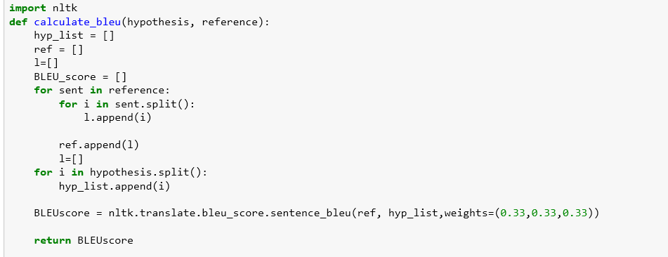
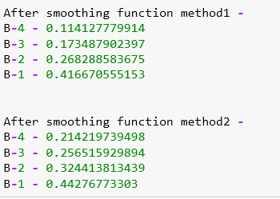

So currently my friend and I are working on this Image Captioning Model for which we studied various different models and tried to come with something on our own. We got pretty decent results based on our limited GPU power. The following post gives the BLEU score of our model.
BLEU or Bilingual Evaluation Understudy is an algorithm for evaluating the quality of text which has been machine-translated from one natural language to another. Instead of source and target language being any natural language, here, we have source language as the Image and the target language is English. It is like translating a picture into an English Sentence. That's why BLEU score can be used to evaluate Image Captioning models.
Scores are calculated for individual translated segments—generally sentences—by comparing them with a set of good quality reference translations. Those scores are then averaged over the whole corpus to reach an estimate of the translation's overall quality. Intelligibility or grammatical correctness are not taken into account.

Source code for nltk.translate.bleu_score
The above code calculates a BLEU score for upto 3-grams using uniform weights. To evaluate your translations with higher/lower order ngrams, use customized weights. E.g. when accounting for up to 4grams with uniform weights: weights=(0.25,0.25,0.25,0.25)
Following are the BLEU score (where B-N means, that uses upto N-grams) on Flickr8k dataset.
For more details, refer - BLEU by Papineni et al and Smoothing Techniques for BLEU. These papers provide the complete understanding of the python code and I encourage you to read it.